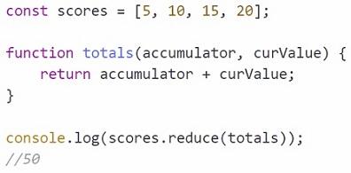

Convierta la función de devolución de llamada en una función de flecha.
Intente obtener dos líneas: una para la creación de la matriz y otra para la llamada al registro de la consola.
Es posible que desee buscar el método de reducción en el sitio web de MDN.
